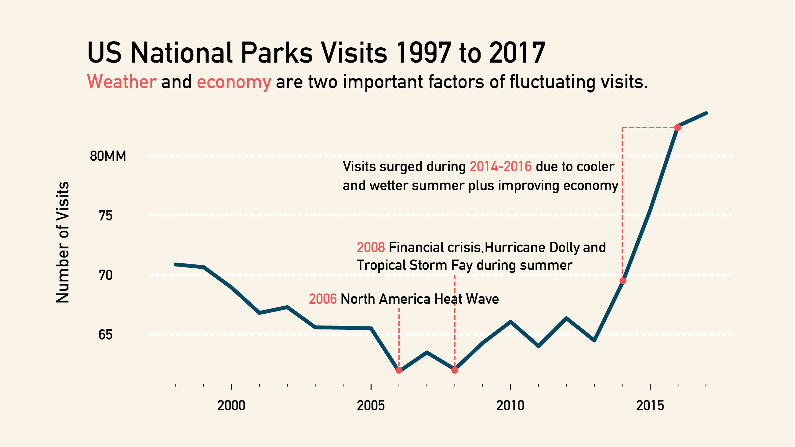
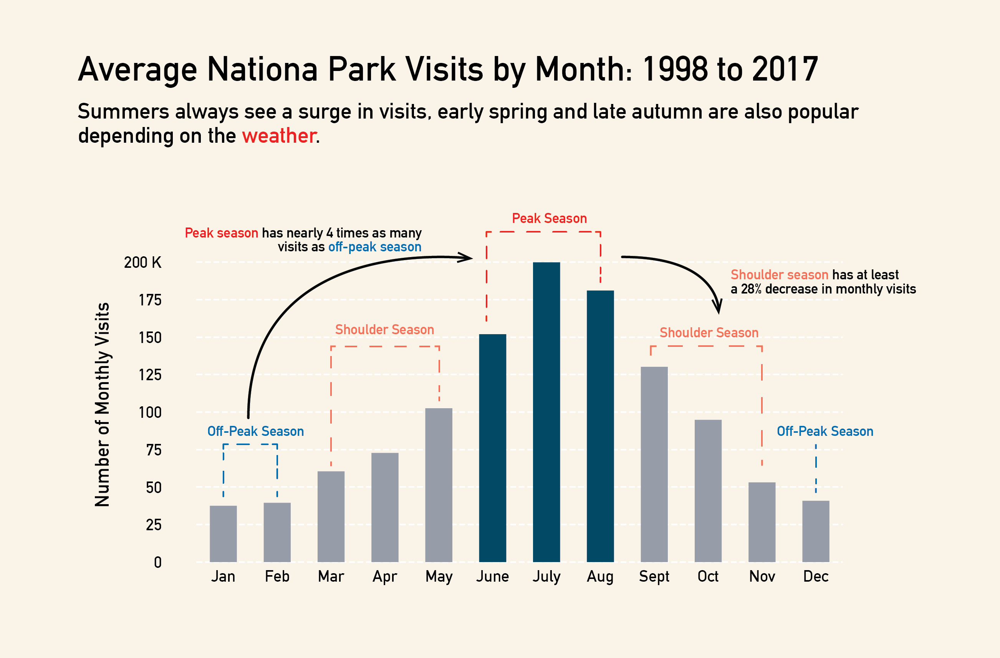
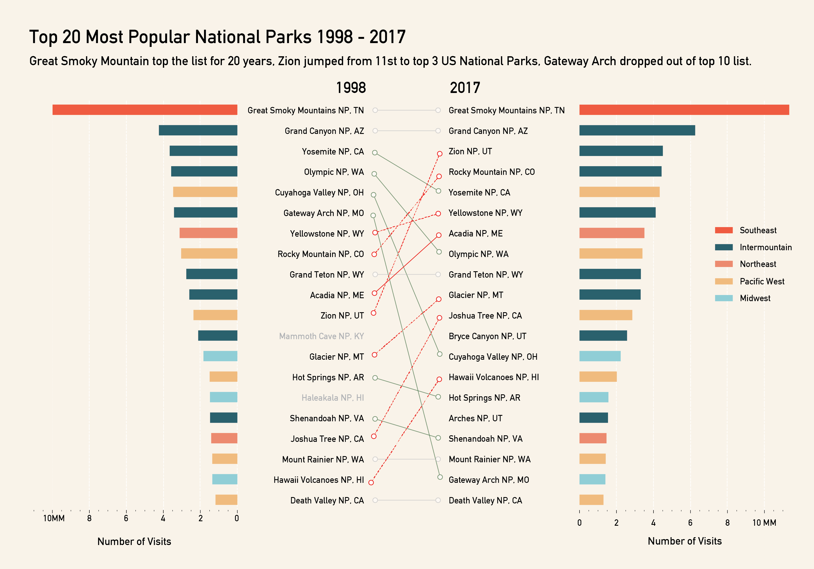

Project NO.1
BY Christina Zhang
Published July 26, 2018
National Parks in the US is one of the best travelling/vacation ideas. As a big fan of the mother nature and national parks, I want to take a deeper look at how the popularity of national parks changed over the past 20 years. I break down this big research question into four specific parts:
I got my dataset from the National Park Service, and they have detailed annual and monthly data on recreational/nonrecreational visits for each reporting national park sites, including national parks, national historic parks, national monuments,etc.,over time.
For this project, I narrow down my scope only on all the national parks (such as the Yellowstone) and recreational visits, so that the perspective is more focused on the tourism and leisure activity behaviors of visitors.
How Does the Number of Visits to the US National Parks Changed Over time?
The visits to all the national parks sites in 2016 and 2017 are over 330 millions, and I'd like to see if there's any surge or dip and what are some possible events causing these fluctuations.
Annual Visits
National Parks have had a hard time during severe weather and economic downturn.
DATA SOURCE: National Park Service
Summertime is an all-time favorite national park season.
It's summer. It's national park party season!
Check out the 'should season' too, if you don't like crowds.
Monthly Visits
DATA SOURCE: National Park Service
What are the most popular national parks in the US?
By comparing the top 20 parks now and 20 years ago, I expected to see a big shuffle in the ranking since 20 years is not a short time. Surprisingly, the ranking actually didn't change a lot, especially for the top 10 parks.
Let's take a look.
Park Popularity Ranking
DATA SOURCE: National Park Service
Overnight Stay Options
When exploring the dataset, I figured that the NPS has records on people's overnight stays. This is a nice supplementary dataset which broadens my research on people's leisure activity behaviors pattern at national parks, so I decided to take a look at this dataset.
My main challenge when dealing with this dataset is how to visualize a pretty flat data trend. Line charts on the number of people for each stay options didn't work since the graph is composed of 5 pretty flat lines, except for the tent campers and concessioner lodging, which are the top 2 options, and they've been competing for people's top stay preference for basically 20 years.I also tried to plotted the percentage change of each year but the graph just doesn't make much sense. I finally decide to go with the treemap that just shows the which are the most popular stay options in 2017.
One interesing trend is the 'competition' between Tent camping and concessioner lodging for the past years.During 2003 and 2008, concessioner lodging beat tent camping, by a pretty great number of people. The main reason might be the extremely hot summer, the busiest national park season, during these 5 years. Who doesn't want AC in an extremely hot weather?
DATA SOURCE: National Park Service
Work-in-Progress: Is there a correlation between gas price and visits to national parks?
I've read an article about national parks two years ago, and below is a quotes from a NPS spokesman when asked what explained the burst in popularity of national parks in 2016:
“You mean besides the price of gas?” said Jeff Olson, a National Park Service spokesman. With gas prices below $3 per gallon last year, visitation surged. “When the price of gas goes up, visitation stutters. Then visitors get used to the price of gas, and visitation returns,”
He implied that the gas price has an impact on the visitations and this raised a question mark for me. I tried to plot the monthly visits and price of gas over the 20 years on the same graph but it's hard to detect a trend. I also ran several linear regressions on different subsets of the data, but the results are far from satifactory. I still need work on this later, but here are couple findings by just looking at the line charts:
Go back to my Homepage